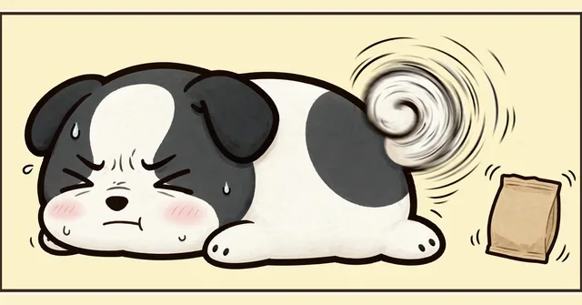
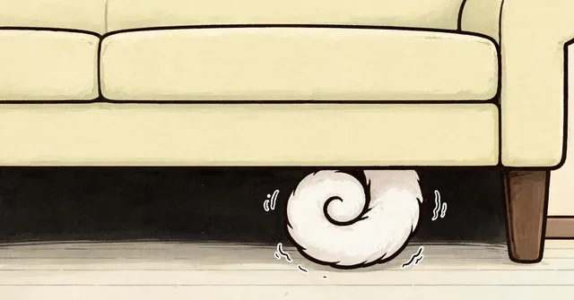
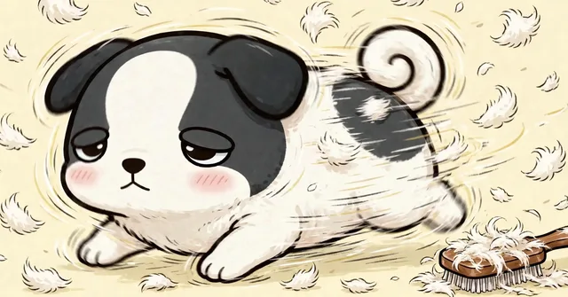
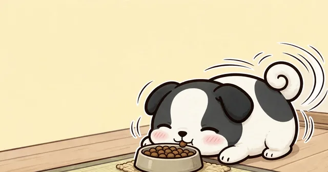

「しっぽは正直」
「ねむいから、そっとしといて」と言いたいのに、しっぽだけは嬉しくて揺れてしまう。素直になれないぱぐおの、連載の始まりの話。
この話を読む4KOMA LIBRARY
ぱぐおの4コマ漫画の本館だよ。見つけるのは note や SNS、読み込むのはここで。公開済みの話はぜんぶここで読めるよ。

「ねむいから、そっとしといて」と言いたいのに、しっぽだけは嬉しくて揺れてしまう。素直になれないぱぐおの、連載の始まりの話。
この話を読むお風呂の誘いを全力で回避する、風呂キャンセル界隈なぱぐおの話。
この話を読む
こたつの魔力には勝てない。冬のぱぐおの話。
この話を読む
こたつの魔力には勝てない。冬のぱぐおの話。
この話を読む
日向ぼっこの特等席は、絶対にゆずらない話。
この話を読む
キャリーケースの気配に、ざわつくぱぐおの話。
この話を読む
新しいおもちゃがやってきた日の、ぱぐおの反応の話。
この話を読む
抜け毛の季節は戦場。パグの換毛期あるあるの話。
この話を読む
眠気にあらがえない。寝落ちする3秒前までを描く話。
この話を読む
お留守番はベテランの域。プロの流儀を見せる話。
この話を読む
甘えたい気持ちはあるのに、素直に言えない。ぱぐおらしい不器用な話。
この話を読む
帰り道の続編。頭の上のポップコーンと、謎の声の話。
この話を読む
雨の日は一歩も外に出ない。固い決意と、しっぽの本音の話。
この話を読む
ごはんの時間が待ちきれなくて、時計とにらめっこするぱぐおの話。
この話を読む
映画の帰り道も、余韻たっぷりなぱぐおの話。
この話を読むぱぐおがNISAをはじめた（？）という、ちょっと意外な話。
この話を読むお散歩に誘われても、どうしても動きたくない。でも本当の気持ちは、しっぽが知っている話。
この話を読む
映画のお供のポップコーンが、本編より先に終わってしまう話。
この話を読むお風呂の誘いを全力で回避する、風呂キャンセル界隈なぱぐおの話。
この話を読む「ねむいから、そっとしといて」と言いたいのに、しっぽだけは嬉しくて揺れてしまう。素直になれないぱぐおの、連載の始まりの話。
この話を読む新しい話は、note などで公開されしだい、ここにも追加されるよ。
noteで連載を追う
読み物もあるよ。ぱぐおの紹介や、パグの豆知識のコラム。
コラムを読む